Fase 4 · Tanda 1 de 3 · El socio
Las tres pantallas que el socio y el representante abren todos los días. Son las tres que las issues #265 y #266 ya habían medido y las tres que quedaron en la cola del barrido. Capturadas contra el entorno de QA con el dataset grande, a 1440×900, con el mismo guión de medición que Miembros, Inscripción y Perfil. Ocho estados, dos roles, antes y después.
El socio primero, según D13: el admin usa la herramienta porque le pagan, el socio la abandona. La consigna de la fase —cambia cómo se ve, no qué hace— se cumple con la suite entera en verde: 3090 tests, ningún endpoint tocado, ninguna regla de negocio movida.
Se mide igual que siempre: la distancia entre el borde inferior del contenido más bajo y el fondo de la ventana, dividida por el alto de la ventana. Es el hueco que la persona ve vacío sin scrollear. Las cuentas del dataset grande son Jazmin Bravo (jugadora adulta autogestionada, plan activo, horario asignado, un pago, cero asistencias), Valentina Vera (representante de tres hijos, con veinte asistencias registradas del hijo seleccionado) y Pedro Salgado, que es el socio nuevo de D11b: membresía creada y cero pagos.
| Pantalla | Estado | Antes | Después | Qué lo movió |
|---|---|---|---|---|
| Mi cuenta | Jugadora adulta con horario | 38% · 344px | 5% · 49px | La cadena que ya estaba escrita, encendida. |
| Mi cuenta | Representante, hijo con datos | 7% · 64px | 5% · 46px | Ya casi llenaba; ahora el pie de acciones queda al pie. |
| Mi cuenta | Socio nuevo, cero pagos | 26% · 231px | 5% · 49px | Ídem, y es el estado que D11b manda diseñar primero. |
| Ficha médica | Jugadora adulta | 52% · 469px | 45% · 409px | Medida corta y el formulario con forma de formulario. |
| Ficha médica | Representante | 33% · 301px | 39% · 349px | Sube, y a propósito — ver abajo. |
| Mis pagos | Jugadora adulta, un pago | 30% · 266px | 25% · 222px | El riel de altura fija fuera del flujo. |
| Mis pagos | Representante, un pago | 23% · 206px | 18% · 162px | Ídem. |
| Mis pagos | Socio nuevo, cero pagos | 17% · 154px | 7% · 64px | El estado vacío llena su caja y por fin ofrece una salida. |
Las mediciones de las issues eran 57 / 42 / 38 / 33 / 27 / 34. Las de arriba son las que dio este dataset hoy, con el mismo guión: coinciden exactamente en Mi cuenta como estudiante (38%) y se corren unos puntos en el resto, porque el número depende de cuántos datos tenga la cuenta que se mire. Las que valen para juzgar el cambio son las de esta tabla, porque el antes y el después salieron de la misma cuenta, la misma base y el mismo minuto.
flex-1
Las tres pantallas medían mal por lo mismo. AppShell dibuja
<main class="flex min-w-0 flex-1 flex-col gap-page"> dentro de una cadena
min-h-screen/flex-1: main ya mide lo que la ventana.
Ningún hijo de primer nivel de estas tres reclamaba ese alto, así que todo lo que el
contenido no usaba se apilaba debajo del último bloque. No era un problema de estas
pantallas: era el mismo problema tres veces.
margin-top: auto no arregla esto, y no porque el margen no
funcione en una columna flex —funciona— sino porque un margen automático solo puede
absorber espacio libre que su contenedor ya tenga. Con nada estirado no hay nada
que absorber, que es exactamente como murió el mismo intento en el PR de perfil. El alto
hay que reclamarlo primero. Después el margen hace su trabajo solo.
En /student eso quiere decir que había tres mecanismos ya escritos y
los tres inertes: el flex-1 de TrainingPanel, el
flex-1 de TrainingRow y el mt-auto de su pie. El
comentario del archivo los daba por funcionando y un test los daba por probados. Lo que
faltaba era el primer eslabón: la grilla de contenido reclama el sobrante
(flex-1) y la columna del riel se estira dentro de ella
(lg:self-stretch).
El carnet se queda fuera de la cadena, arriba, a su alto natural. El fix 12b ya lo estiró
una vez y el sobrante terminó dentro de la tarjeta, debajo de su grilla de datos:
el mismo vacío mudado de lugar, no cerrado. Un carnet tiene proporciones de carnet; un
panel de filas no. Los dos tests que fijan esa reversión
—no flex-1 en el carnet, no items-stretch en la grilla— siguen
verdes sin tocarlos.
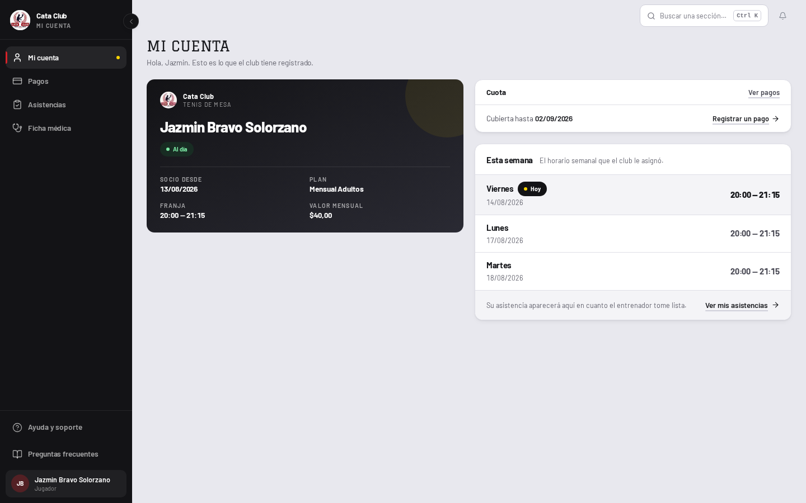
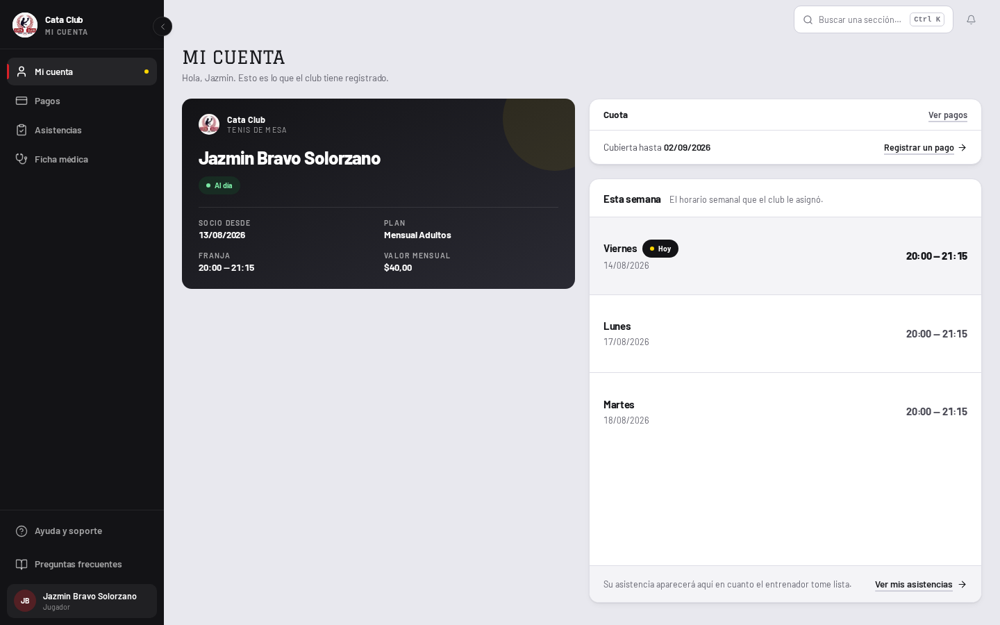
El techo de la fila salió de mirar la primera medición, no de la teoría.
Con el sobrante llegando por fin al panel, tres filas repartiéndoselo crecieron a
168px cada una: una fila de 56px renderizada casi al triple, su marca
bg-sunken convertida en una plancha gris y la etiqueta del día flotando en
el medio. Eso es el «espacios vacíos» del cliente reapareciendo dentro de la
fila que debía absorberlo. El techo es max-h-[112px], y es el mayor valor
en el que una fila sigue leyéndose como una fila. Lo que sobra pasado ese punto se
detiene en el pie, que mt-auto ahora sí ancla de verdad.
El estado vacío del horario tenía dos de sus tres partes.
D11 pide qué falta, por qué y qué hacer. Tenía las dos primeras y la
tercera era una frase —«consulte en administración»— sin nada que apretar. Ahora lleva
action a /ayuda y fill, para que dentro del panel
estirado el enunciado se centre en su caja en vez de quedar arriba con lienzo debajo.
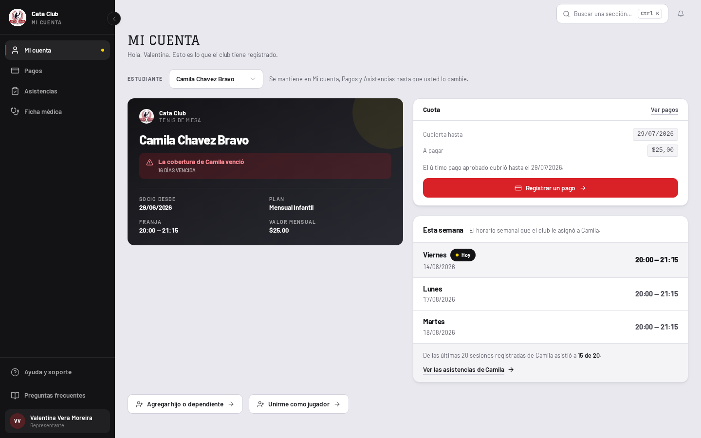
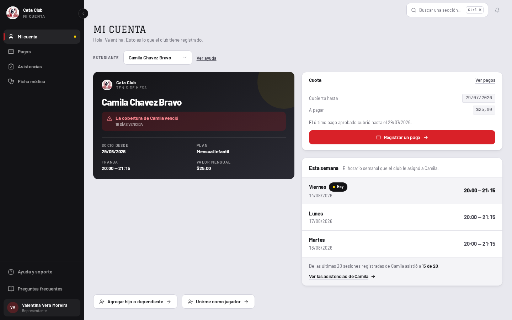
La etiqueta de la salida del estado vacío no se escribió a mano. D12b dice
que el nombre de un destino sale del mismo registro que dibuja el riel, así que el enlace
dice Preguntas frecuentes, que es como el shell nombra /ayuda en
todas partes, y no «Ayuda» ni «Consultar» ni ninguna variante nueva.
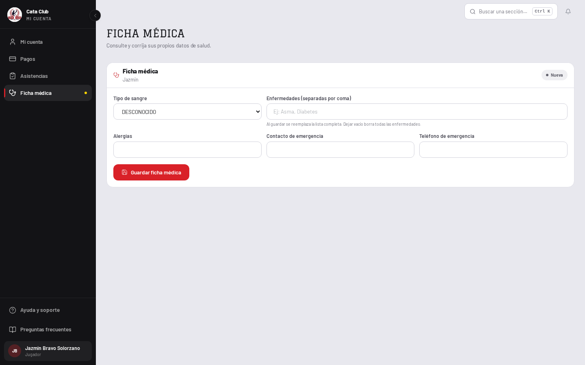
max-w-8xl: la medida MÁS ancha del producto para su contenido más angosto.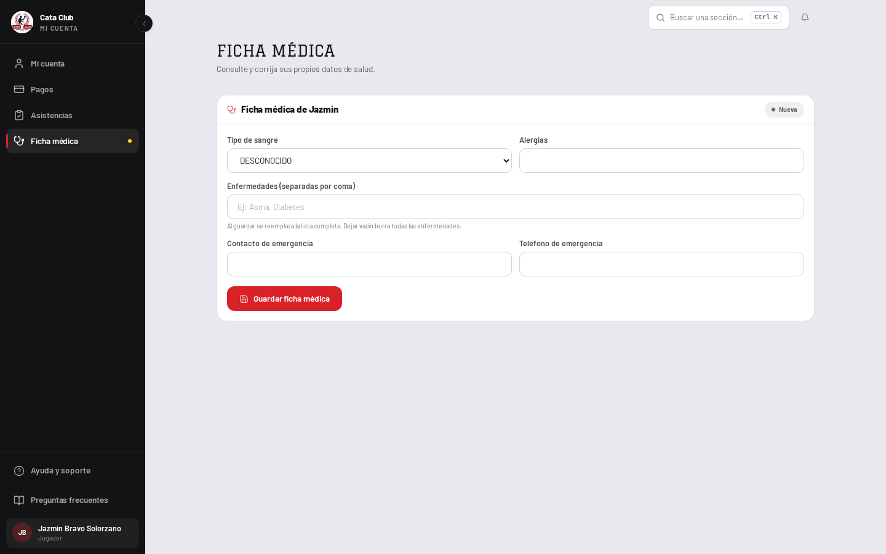
Tres encabezados apilados nombrando lo mismo.
El <h1> de la página decía «Ficha médica», el editor lo repetía
palabra por palabra en su propio encabezado, y entre los dos había una tarjeta suelta
cuyo <h2> lo decía por tercera vez y cuyo <p>
reescribía el subtítulo de la página con otras palabras. D11c es explícito:
«ninguna ayuda repite el subtítulo: si lo repite, sobra una de las dos». La
tarjeta se fue entera. Lo único que hacía de verdad —decirle a un representante cuál de
sus dos hijos está en pantalla— lo hace mejor el encabezado fijo del editor, que es el
que sobrevive al scroll.
El nombre dejó de ser una segunda línea y entró al título.
«Ficha médica» arriba y «Martín» debajo son una sola frase partida al medio. Ahora el
encabezado dice «Ficha médica de Martín» y sigue siendo el elemento que
la banda sticky fija. Es el único candado de test que hubo que renegociar
en toda la tanda, y la renegociación está escrita en el propio test con su porqué: lo que
ese test protege —que quien edita no pierda de vista de quién es el dato médico, y que el
mecanismo sea position: sticky de verdad— no cambió.
Tres columnas eran una tira de controles, no un formulario.
sm:grid-cols-2 lg:grid-cols-3 metía los cinco campos en dos filas, y eran
las mismas dos filas con la ficha vacía o llena. Dos columnas es además la forma honesta:
tipo de sangre al lado de alergias —lo que el club necesita saber antes de actuar—, la
lista de enfermedades con el ancho completo que un valor separado por comas pide, y los
dos campos de emergencia juntos, porque son un solo dato escrito en dos cajas. Es el
editor compartido con /members, así que la mejora viaja también al admin.
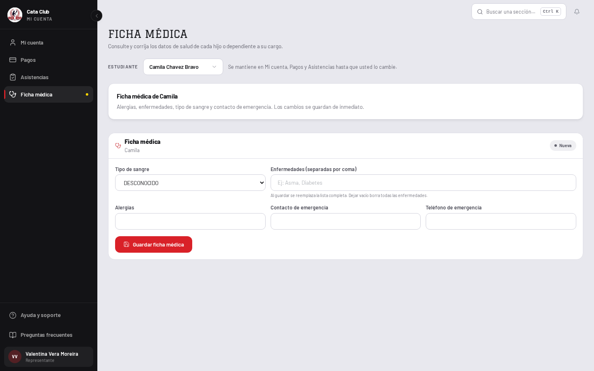
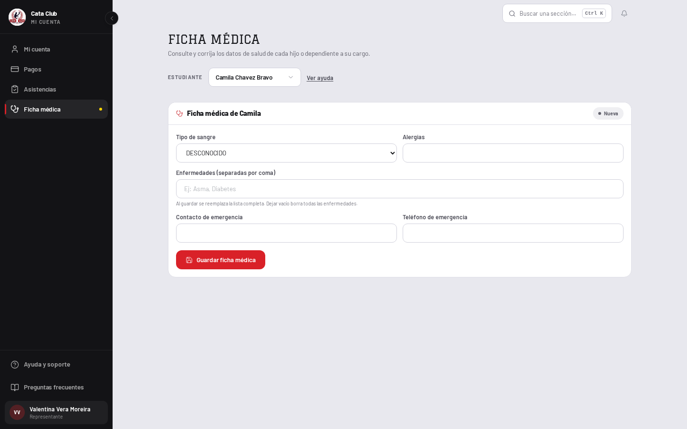
Como representante la ficha médica pasa de 33% a 39%. Lo que se fue son 90px de una tarjeta que repetía dos veces lo que la pantalla ya decía; lo que entró son unos 150px de formulario con forma de formulario. La resta no da a favor del número, y da muy a favor de la pantalla. Bajar el porcentaje pedía dejar la repetición en su lugar o inventar un dato: la ficha médica no tiene historial, ni tendencia, ni fecha de última actualización —el backend no las guarda— y D14 prohíbe inventar una forma. El documento mide 900px antes y después: no scrollea en ninguno de los dos.
Esta pantalla es la tercera del producto en tomar measure="short", después de
/discounts y /groups. El registro que lo controla
(content-measure.test.ts) exige que una pantalla entre por una medición
y no por parecer ancha, y está escrito ahí con las dos lecturas que la habilitan. El propio
AppShell es honesto sobre lo que short hace y lo que no: no achica
el lienzo, cambia la proporción del bloque que está encima. 1356px de columna cargando un
formulario de 300px se lee como una página que se quedó sin filas; 972px cargando 450 se lee
como una columna con margen.
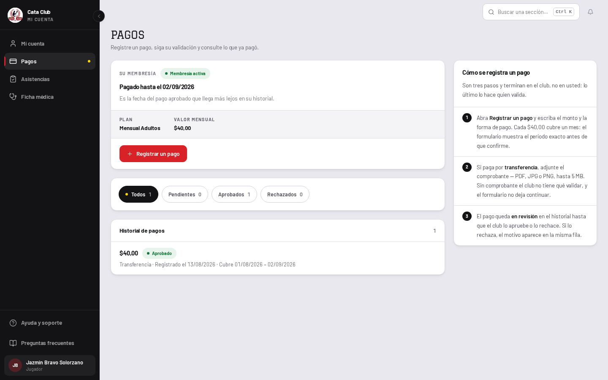
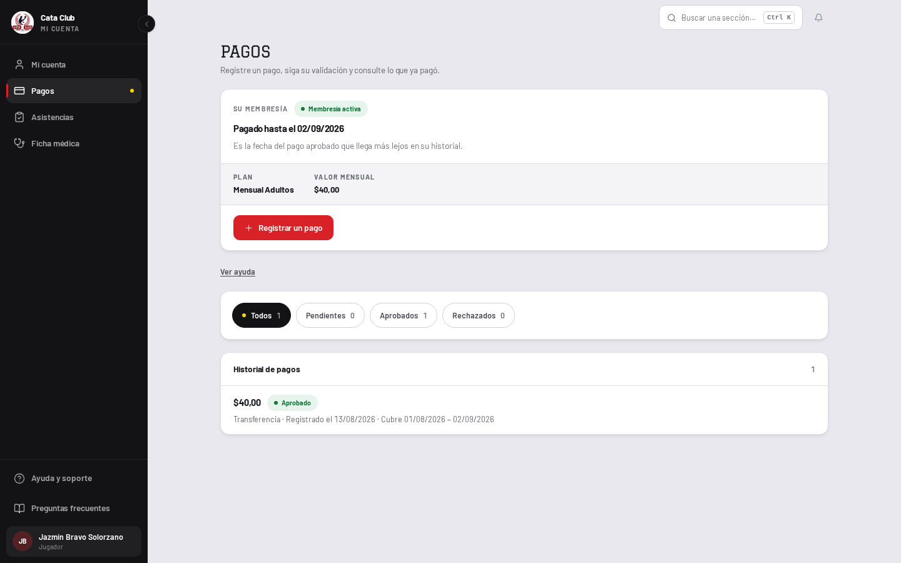
Era un procedimiento, y los procedimientos van detrás de «Ver ayuda».
Tres pasos numerados y un preámbulo: la pieza de ayuda suelta más larga del portal del
socio. D11c dice que el subtítulo dice qué es la pantalla y todo lo que explica
cómo funciona se guarda. ContextualHelp ya existía y solo lo usaban
dos pantallas de admin. Sus tres variantes —el lector que puede pagar, el que todavía no
tiene membresía y el menor que no registra pagos— siguen enteras, palabra por palabra.
Y era el defecto de layout, no solo de ubicación.
El comentario que llevaba ya admitía el síntoma —«dejaba un hueco de 170px»— y lo
respondía con row-span-2, que reparte el mismo bloque fijo sobre las dos
filas en vez de sacar lo que estaba fijando el alto. Detrás de la revelación cuesta una
línea de 20px cerrada.
Sin el riel, la columna única heredaba 1356px.
Y ahí aparecía la otra mitad de «espacios vacíos», la horizontal: la tarjeta de membresía
con «Pagado hasta el 02/09/2026» a la izquierda y 600px de nada a su derecha; una fila de
pago —un monto, una insignia y una línea de metadato— corriendo el ancho completo por la
misma razón. Esta pantalla califica para measure="short" por la regla que el
propio AppShell escribe, no por gusto: su alto es función de cuántos pagos
existen y no tiene paginador.
Cuatro usuarios de PAGE_RAIL, no cinco.
El riel tenía exactamente un bloque adentro. Guardar una columna de 340px por sí misma es justamente el error contra el que advierte el comentario del propio token: «un riel NO cierra el vacío vertical». El canario del registro baja a 4 con el motivo escrito, igual que bajó a 5 cuando el tablero del entrenador dejó de ser un riel.
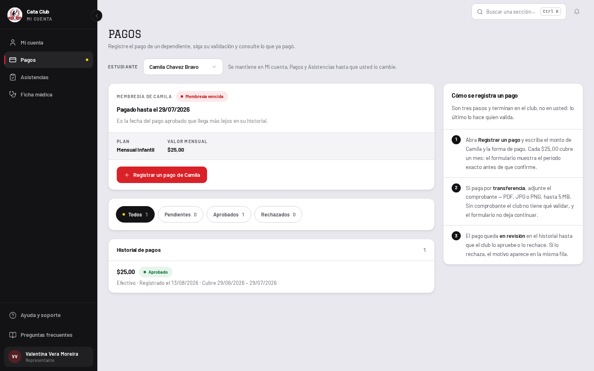
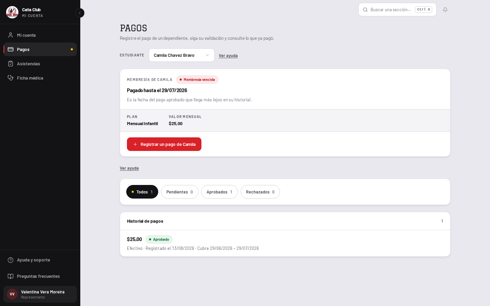
El procedimiento no perdió una palabra al mudarse.
Las tres variantes siguen enteras: la del lector que puede pagar —los tres pasos, con el
nombre del hijo intercalado y el precio del plan que el formulario va a proponer—, la de
quien todavía no tiene Membresia y la del menor en su propia cuenta, que no
recibe los pasos sino la alternativa. Los discos numerados se quedan: D9 prohíbe numerar
bloques en el producto y esta es su única excepción declarada, porque acá el orden
es la información —el paso 2 no se puede hacer antes que el 1—. Lo que perdieron
al salir de la tarjeta es el cromo de fila: la calle de 20px y la hairline entre pasos,
que dentro de la hoja de ayuda se leían como una tabla.
D11b es explícito: «cada pantalla se diseña con el socio nuevo primero». Pedro
Salgado tiene membresía y cero pagos, que es lo que tiene cualquiera el día que entra al
club. Es el estado donde el fill del estado vacío se gana el sueldo.
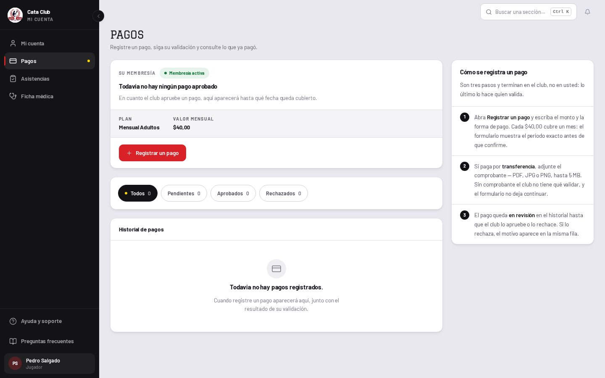
action aparecía solo con un filtro puesto.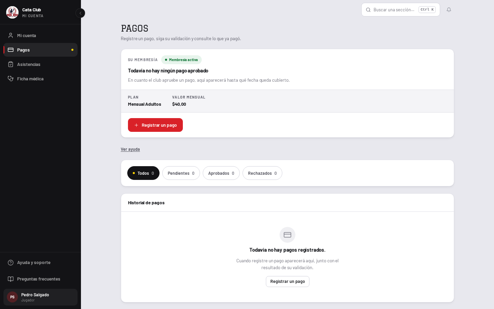
El estado vacío del historial tenía la salida al revés. El
action aparecía únicamente cuando había un filtro puesto —que es el caso
recuperable, el que se arregla apretando otro chip— y la familia sin ningún pago, que es
el caso flaco real, se quedaba sin nada que hacer. Ahora la lista vacía sin filtro ofrece
Registrar un pago, que apunta a ?registrar=1: la misma puerta que la
banda de Mi cuenta ya abría. No es un comportamiento nuevo, es una entrada más al que ya
existía. Y la puerta solo aparece cuando el formulario es realmente alcanzable: un menor en
su propia cuenta no registra pagos, una persona sin Membresia no tiene qué
renovar y un pago pendiente bloquea el segundo hasta que el club se pronuncie.
La primera versión de este pase estiraba el historial siempre. En jsdom se veía
bien y en el navegador era un defecto: con un pago en la lista, la tarjeta llegaba al pie
de la ventana y dibujaba 200px de marco vacío debajo de una sola fila. Es
el mismo vacío que este rediseño viene a cerrar, mudado adentro de un borde — y una caja
vacía con borde se ve más, no menos, que el lienzo que reemplaza. Estirar rinde
donde fill puede centrar un enunciado en la caja, que es el caso vacío. Con
filas, la tarjeta se queda a su alto.
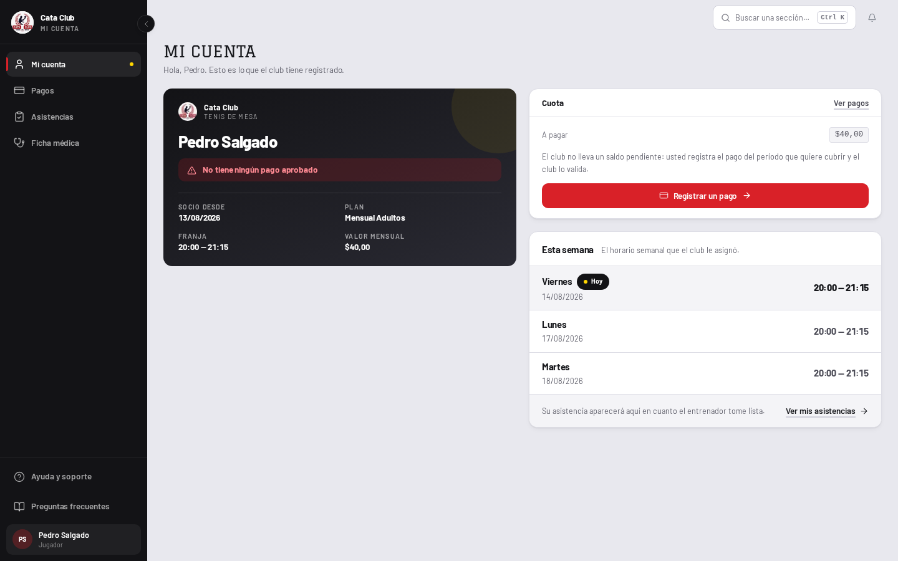
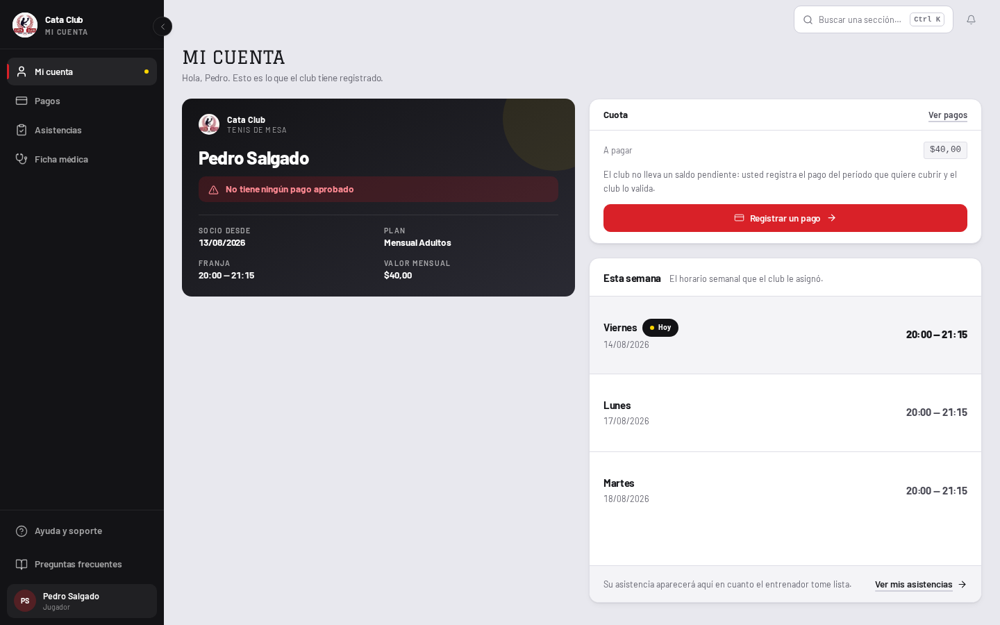
El selector de estudiante lo dibujan las tres pantallas desde el mismo componente, y llevaba
una frase permanente al lado: «Se mantiene en Mi cuenta, Pagos y Asistencias hasta que usted
lo cambie». Es un cómo funciona, no un qué es, así que eran tres copias del
mismo párrafo flotante. Pasó a ContextualHelp con el título «Cómo funciona esta
elección», y de paso dice ahora la otra mitad del contrato que la frase original callaba: que
la elección viaja en la dirección de la página, así que un enlace compartido abre la misma
persona.
Con esto, las tres pantallas del socio usan el mismo contrato de ayuda que el panel de admin tiene desde #199, que es lo que pedía la issue #264 antes de que D11c la absorbiera.
El sticky top-0 del editor de ficha médica.
El diagnóstico decía, con razón, que está pensado para un formulario que desborda y que
en /student/medical-record nunca desborda. Se queda igual: es el
mismo componente que el admin monta dentro de una fila de
/members, donde el cuerpo sí scrollea y donde la identidad del alumno es lo
único que impide editar la ficha equivocada. Un test lo fija nombrando el mecanismo. En
la pantalla del socio no cuesta un píxel: la banda existe igual, solo que nunca se
despega.
WeekStrip en «Esta semana».
El encaje es evidente —el panel se llama literalmente como una semana y la primitiva
existe sin un solo uso en producción— pero pide un mapa de día de backend
("LUNES") a día de frontend ("lun") que hoy vive en
lib/server/attendance-adapter.ts, del lado del servidor. Traerlo al cliente
o duplicarlo son las dos formas de crear el segundo vocabulario que D9 prohíbe. Queda
para cuando se toque el adaptador, con su propia medición.
StatCard / StatGrid con las cifras de asistencia.
summarizeRecentAttendance y breakdownAttendance ya las
calculan y son honestas. Pero el pie de «Esta semana» ya dice la proporción en una frase
—«De las últimas 20 sesiones registradas de Camila asistió a 15 de 20»— y repetirla como
cifra sería el mismo dato dos veces en la misma tarjeta. Y en el estado que manda D11b,
el socio nuevo, el recap es null: una tarjeta de estadística ahí solo podría
decir 0 de 0. Vive donde ya vive, en /student/attendance.
La columna del carnet, vacía debajo de la tarjeta.
Con el riel estirado, la mitad izquierda de Mi cuenta queda con el carnet arriba y aire debajo. Llenarla pide contenido que la cuenta no tiene: para una jugadora nueva no hay asistencias, no hay historial de pagos en esta pantalla y no hay más datos de membresía que los cuatro que el carnet ya imprime. Estirar el carnet para taparlo es exactamente el fix 12b que ya se revirtió. Queda medido y a la vista.
El 45% y el 39% de la ficha médica.
Medidos, explicados y sin cerrar. Es la única de las tres que es layout puro: no crece con datos porque no hay datos que la hagan crecer. Lo que se hizo es lo que el sistema permite hacer sin mentir —medida corta, forma de formulario, un solo encabezado— y el resto es el mismo tipo de número que el README ya lleva declarado para el login.
Suite completa, tipos y lint sobre este cambio:
npm test — 187 archivos, 3090 tests, todo en verde (eran 3089; el neto son ocho casos nuevos y uno reemplazado).
npm run type-check — sin errores.
npm run lint — sin advertencias.
Los tres candados de registro que este cambio toca se actualizaron con el motivo escrito
adentro, que es para lo que existen: content-measure.test.ts (la ficha médica y
los pagos entran a la medida corta, cada una con su lectura),
page-rail-usage.test.ts (los pagos dejan de ser un riel) y
MedicalRecordEditor.test.tsx (el nombre entra al encabezado). Ninguno se relajó:
los tres siguen fallando si alguien repite lo que venían a impedir.
Las capturas se regeneran con el guión de medición contra QA en
http://localhost:3000, a 1440×900, entrando con
jazminbravo56@cataclub.com, valentinavera0@cataclub.com y
pedro@cataclub.com. El índice de todas las comparaciones está en
README.md.